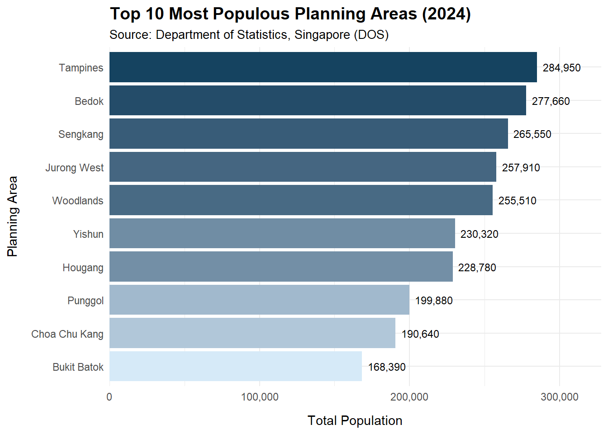

library(tidyverse)Take Home Exercise 1 Feedback
Learn from Peers
Task
Choose one of my classmate’s submissions and identify three strengths based on good design principles, as well as three aspects that could be improved. Based our your critique, create an improved version of the data visualization.
Peer Review
This review is based on one of my classmate submission which is available at here
The Data
The dataset titled “Singapore Residents by Planning Area / Subzone, Single Year of Age and Sex, June 2024”, published by the Department of Statistics Singapore (DOS) was used for our class assignment
Loading Packages
Below is the package that was downloaded by the peer.
Here is some additional packages that I use for this peer review :
library(scales)Loading Data
The code chunk below loads the data. I’ve prepared two datasets, one for the original plot and another is for the makeover.
originaldata <- read_csv("data/respopagesex2024.csv")makeover <- read_csv("data/respopagesex2024.csv")Visualization Review
Visualisation 2: Top 10 Planning Areas by Total Population
The Original Visualization
top_pa <- originaldata %>%
group_by(PA) %>%
summarise(Total_Pop = sum(Pop)) %>%
arrange(desc(Total_Pop)) %>%
slice_head(n = 10)
ggplot(top_pa, aes(x = reorder(PA, Total_Pop), y = Total_Pop)) +
geom_col(fill = "steelblue") +
coord_flip() +
labs(title = "Top 10 Most Populous Planning Areas (2024)",
x = "Planning Area", y = "Total Population") +
theme_minimal()
Feedbacks
Overall Rating – Quadrant III:
Referring to the Clarity vs. Aesthetics framework by Ben Jones, I would place this chart in Quadrant III, which represents visualizations that are both confusing and unattractive. Visually, the chart could be enhanced with better spacing, labeling, and color contrast to improve its aesthetic appeal and overall clarity.
Good Design Points :
1. Well Ordered from Highest Population to Lowest
The bars are arranged in descending order, starting from the planning area with the highest population at the top to the lowest at the bottom. With this type of ordering it helps the audience especially for general readers to quickly grasp the ranking of each area without the need to compare individual values. Thus, this type of graph enhance the readanility and allows easy visual comparison across planning areas.
2. Clear Axis Label
Both the x-axis and y-axis title are clearly labeled which ensure the readers can immediately understand what the chart is showing without additional need of explanation.
3. Horizontal Layout
Using horizontal bars is well considered design choice, especially dealing with long category names such as “Jurong West” and “Choa Chu Kang”. If the writer decided to use vertical bar charts, lenghty category names often will become overlaped which can significantly reduce readability.
Areas for Improvement
1. X-Axis Values Format
I believe as a general audience especially for those who does not have any mathemathical background, scientific notation like 1e+05 would be hard to understand and confusing. It is not immediately clear so instead I would suggest using some basic mathemathical formatting like (comma) would be more friendly and easier to interpret for general audience.
2. Lack of Data Labels on Bars
In this case, since the chart is presented using a static chart (without interactive features), as an audience it is impossible for us to know the exact population per planning areas. As a result this chart becomes somewhat limited in usefulness eventhough it clearly shows the ranking of the planning area. In my opinion, adding data labels would greatly enhance the clarity and make the chart more informative.
3. Monochromatic Color Scheme
Since the chart uses a single color (steelblue) for all bars, it is harder to distinguish or emphasize which one is the top ranked area. In my opinion choosing this kind of visualization makes a limitation for the visual impact. Including color variation (gradient) based on the population size would make the chart more engaging and help the readers to draw attention to the most important values.
Makeover Visualization
top_pa <- makeover %>%
group_by(PA) %>%
summarise(Total_Pop = sum(Pop), .groups = "drop") %>%
arrange(desc(Total_Pop)) %>%
slice_head(n = 10)
ggplot(top_pa,
aes(x = reorder(PA, Total_Pop), y = Total_Pop, fill = Total_Pop)) +
geom_col(show.legend = FALSE) +
geom_text(aes(label = comma(Total_Pop)), hjust = -0.15, size = 3) +
coord_flip() +
scale_y_continuous(labels = comma, expand = expansion(mult = c(0, 0.15))) +
labs(
title = "Top 10 Most Populous Planning Areas (2024)",
subtitle = "Source: Department of Statistics, Singapore (DOS)",
x = "Planning Area",
y = "Total Population"
) +
scale_fill_gradient(low = "#D6EAF8", high = "#154360") +
theme_minimal() +
theme(
plot.title = element_text(face = "bold", size = 14),
plot.subtitle = element_text(size = 10),
axis.title.x = element_text(margin = margin(t = 10)),
axis.title.y = element_text(margin = margin(r = 10))
)
fill = Total_Popwas added insideaes()to create a color gradient that represents population.geom_text(aes(label = comma(Total_Pop)), ...)was added to display population values on each bar.scale_y_continuous(labels = comma, expand = expansion(mult = c(0, 0.15)))was added to format the y-axis with commas instead of scientific notation and also expand the axis range so that the text labels per bar could fit into the chart.scale_fill_gradient(low = "#D6EAF8", high = "#154360")was added to apply gradient color scheme to the bars.The
labs(..., subtitle = "Source: Department of Statistics, Singapore (DOS), ...)"was also added to provide data source information so that the reader could understand the credibillity of the chart.
Additional Critique :
Besides evaluating the visualization itself, I would like to offer a critique on the data preparation process. As analysts, one of our most important responsibilities before diving into visualization is to question and examine the data quality. Data cleaning and recoding are essential steps in ensuring that the information we present is accurate and meaningful.
For instance, in the first visualization shared by my peer, the age values appeared cluttered. This could have been improved through data recoding, such as grouping individual ages into age categories, which would make the chart more organized and easier to interpret.
Additionally, during my own analysis, I noticed that some planning areas had a population of zero. While this may not affect Visualization 2 which only shows the 10 most populous planning areas, questioning the data could have a great impact on catch inconsistencies and outliers.